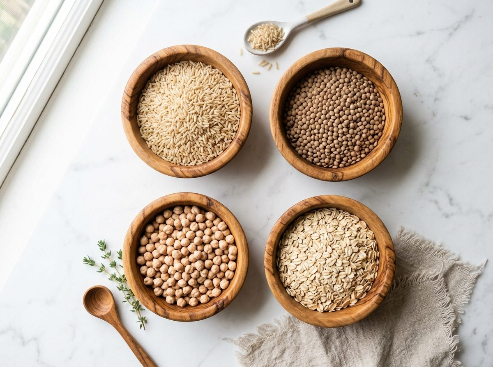
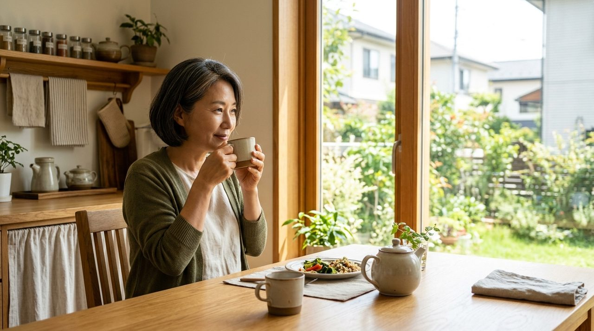

“우리가 매일 무심코 비우는 밥 한 공기의 질이 세포의 노화 시계를 늦추는 가장 강력한 백신입니다.”
— 서울아산병원 노년내과 정희원 교수
점심만 든든하게 먹고 나면 눈꺼풀이 천근만근 무거워져 모니터 앞에서 꾸벅꾸벅 조신 적 있으시죠?
이게 단순히 어제 늦게 자서가 아니라, 방금 그릇 싹싹 비운 새하얀 백미밥이 핏속에서 설탕 폭탄을 터뜨린 '혈당 롤러코스터'의 경고음입니다.
비싼 피부과 시술이나 명품 항노화 크림에 큰돈 쓰기 전에 매일 내 입으로 들어가는 밥솥 뚜껑부터 열어봐야 하는 이유인데요.
곡물 배합만 살짝 바꾸고 조리할 때 작은 팁 하나만 더해도 혈당 상승 지수(GI)를 절반 가까이 뚝 떨어뜨릴 수 있습니다.
유튜브와 방송을 뜨겁게 달군 서울아산병원 정희원 교수의 공식 4:2:2:2 레시피와 밥맛 살리는 꿀팁을 에디터 혀니가 아주 쉽고 유쾌하게 싹 풀어드릴게요!
백미가 부르는 만성 염증과 혈당 스파이크

윤기가 자르르 흐르는 새하얀 쌀밥은 보기엔 참 곱지만, 영양학적으로 냉정하게 보면 '뭉쳐놓은 각설탕'에 가깝습니다.
쌀눈과 껍질이 전부 깎여 나간 순수 전분 덩어리라 입에 닿는 순간 침과 섞여 무서운 속도로 포도당으로 분해되거든요.
핏속에 당이 홍수처럼 쏟아지면 불쌍한 췌장은 비상근무에 돌입해 인슐린을 폭발적으로 뿜어냅니다.
이 혈당 스파이크가 매일 삼시 세끼 반복되면 인슐린 저항성이 생기고 혈관벽에 염증이 쌓이며 우리 몸은 노화의 급행열차를 타게 됩니다.
| 비교 항목 | 일반 백미밥 | 단순 현미밥 | 저속노화 잡곡밥 |
|---|---|---|---|
| 혈당 지수 (GI) | 84 (설탕급 급상승) | 65 (보통 수준) | 48 (완만한 초저혈당) |
| 단백질 함량 (공기당) | 약 4.2g (턱없이 부족) | 약 5.8g | 약 11.5g (2.7배 폭발) |
| 식이섬유 함량 | 약 1.1g (미미함) | 약 3.5g | 약 8.2g (7배 이상 풍부) |
| 식후 포만감 | 1~2시간 뒤 허기짐 | 2~3시간 지속 | 4시간 이상 든든함 유지 |
세포 노화를 늦추는 4대 곡물 황금비율
건강 챙긴다고 마트에서 15곡, 20곡 잡곡 사다가 무작정 한 솥 가득 털어 넣는 분들 많으시죠?
곡물마다 익는 시간이 제각각이라 덜 익은 껍질 때문에 밥 먹고 반나절 내내 뱃속에서 방귀 폭탄과 더부룩함에 시달리기 딱 좋습니다.
서울아산병원 정희원 교수가 수많은 임상 연구로 찾아낸 정답은 딱 4가지, [렌틸콩 4 : 귀리 2 : 현미 2 : 백미 2] 공식입니다.
"렌틸콩이 40%나 들어가면 그게 밥이야 콩 범벅이야?" 싶겠지만, 납작한 렌틸콩은 밥에 섞이면 거부감 없이 밤처럼 고소하게 싹 녹아듭니다.
핵심은 쌀이 아니라 단백질과 수용성 섬유질의 왕인 렌틸콩이 밥의 40%를 꽉 잡고 주연 역할을 해주는 것입니다.
쌀의 탄수화물 흡수를 렌틸콩과 귀리가 멱살 잡고 늦춰주기 때문에 식사 후에도 혈당이 얌전하게 유지됩니다.
더부룩함 없이 부드럽게 짓는 3대 조리 비법

잡곡밥만 먹으면 속이 쓰리고 가스가 찼던 분들, 내 위장 탓이 아니라 곡물 껍질의 방패 물질인 '피틴산' 때문입니다.
조리 전 미온수에 최소 6시간 푹 불려주고 불린 물을 과감히 버린 뒤 새 물을 잡아주면 복부 팽만감이 감쪽같이 사라집니다.
여기에 에디터 혀니의 비밀 병기! 취사 버튼 누르기 전 소주 1~2잔을 쪼르륵 부어보세요.
"대낮부터 밥 먹고 취하라는 건가?" 싶겠지만 알코올은 끓으면서 싹 날아가고 뻣뻣한 잡곡 섬유질을 부드럽게 연화시켜 줍니다.
농촌진흥청 국립식량과학원 연구에서도 소주를 넣고 지었더니 항산화 성분인 총 폴리페놀이 약 17%나 증가한 것으로 검증되었습니다.
밥맛은 카스텔라처럼 부드러워지고 세포를 지키는 항산화 영양은 훨씬 알차게 터져 나오는 셈이죠.
마지막으로 엑스트라 버진 올리브유 1티스푼을 둘러 밥을 지은 뒤 냉장실(1~4℃)에 식혀두면 기적이 일어납니다.
식물성 오일 분자가 전분과 결합해 소화 효소가 분해하지 못하는 '저항성 전분'으로 탈바꿈하여 혈당 스파이크를 확실하게 잠재워 줍니다.
식후 당 흡수를 차단하는 거꾸로 식사 순서

아무리 보약 같은 저속노화 밥을 지었더라도 상에 앉자마자 숟가락으로 밥부터 푹 퍼먹으면 도로 아미타불입니다.
식탁의 숟가락 순서만 바꾸는 '채소 ➔ 단백질 ➔ 탄수화물' (채-단-탄) 법칙만 기억하세요.
식사를 시작할 때는 먼저 신선한 나물, 샐러드, 김이나 미역 같은 해조류를 5분간 아삭아삭 꼭꼭 씹어 먹습니다.
풍부한 식이섬유가 소장 벽에 촘촘한 '그물 방패'를 깔아주어 뒤따라 들어올 당분의 흡수 속도를 꽉 잡아줍니다.
그다음 두부, 달걀, 생선구이, 살코기 등 단백질 반찬으로 든든하게 배를 채워주면 포만감 호르몬이 뿜어져 나옵니다.
맨 마지막에 이르러 오늘 지은 구수한 저속노화 밥을 천천히 드시면 거짓말처럼 식후 식곤증 없이 오후 내내 머리가 맑고 개운해집니다.
밥 한 공기로 지켜내는 평생 대사 건강

나이 듦을 늦추고 건강을 지키는 비결은 손에 쥐기도 힘든 고가의 영양제 한 움큼이나 고통스러운 굶기에 있지 않습니다.
매일 세 끼 내 밥상에 올라오는 곡물을 현명하게 선택하고 내 몸을 소중하게 대접하는 작은 실천에서 모든 변화가 일어납니다.
오늘 저녁 밥 지으실 때 전기밥솥에 렌틸콩과 귀리를 한 줌씩 섞어 넣고 나만을 위한 건강하고 구수한 밥상을 차려보세요.
식후 무거운 피로 대신 가벼운 몸과 맑아진 머리로 활기찬 매일을 누리실 수 있도록, 에디터 혀니가 나와 소중한 가족의 건강한 식탁을 다정하게 응원합니다!
자주 묻는 질문 (FAQ)
* 농촌진흥청 국립식량과학원 - 밥물 알코올 첨가에 따른 잡곡밥의 폴리페놀 및 항산화 활성 연구
* 질병관리청 (KDCA) - 만성질환 예방을 위한 통곡물 섭취 권고안
* 미국화학학회 (ACS) - 오일 첨가 및 냉장 보관을 통한 쌀밥 저항성 전분 형성 연구
독자 댓글 (0)